| Date | Ver. | Inc. | Author | Amendment | Status |
|---|---|---|---|---|---|
| February 2010 | 0 | 1 | Kevin John | New Topic created to migrate content from Word Authoring Guide v2.0 | Draft |
|
Entity |
Definition / Context |
Core Notations |
||||||||||||
|---|---|---|---|---|---|---|---|---|---|---|---|---|---|---|
|
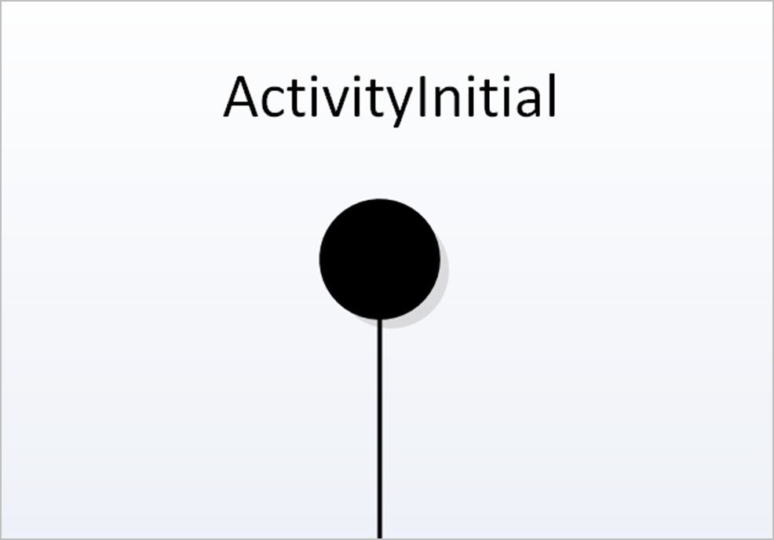
|
“The Initial Activity when ‘triggered’ commences the processing defined by the activity diagram” |
Initial Activity Elements are represented as a small solid black circle element with the label ‘InitialActivity’, along with
any other name for this element; it has a single outgoing flow.
If this diagram is ‘referred to’ by another diagram the name of the referring diagram should also be added at this point.
There can only be one Initial Activity on a Diagram.
|
||||||||||||
|
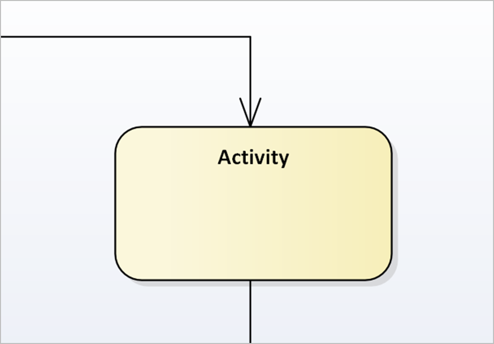
|
“An Activity element organises and specifies the participation of subordinate behaviours, such as sub-Activities or Actions,
to reflect the control and data flow of a process.” |
Activity Elements are represented as round corner boxes with the name of the process/activity showing inside.
Each Activity represents a ‘whole’ single activity which itself is part of the overall process being described.
|
||||||||||||
|
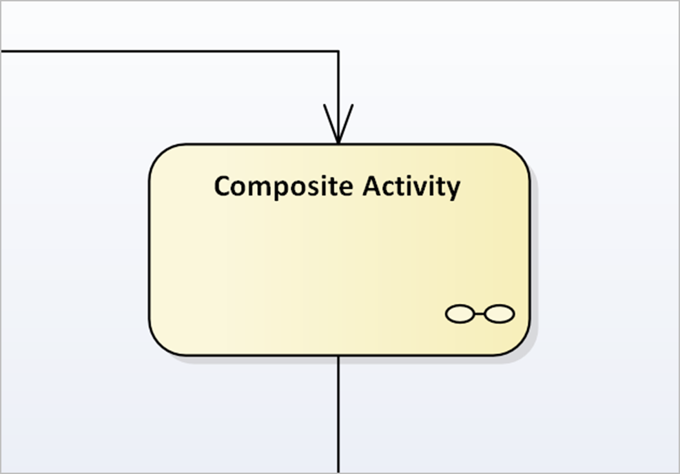
|
“Composite Activity Elements denote subordinate behaviours; these are elaborated on a separate diagram.” |
Composite Activity Elements are represented as Activity Elements that include a "spectacle" symbol.
This element links to a ‘composite’ diagram to elaborate the sub-process/es required to achieve the ‘parent’ Activity.
|
||||||||||||
|
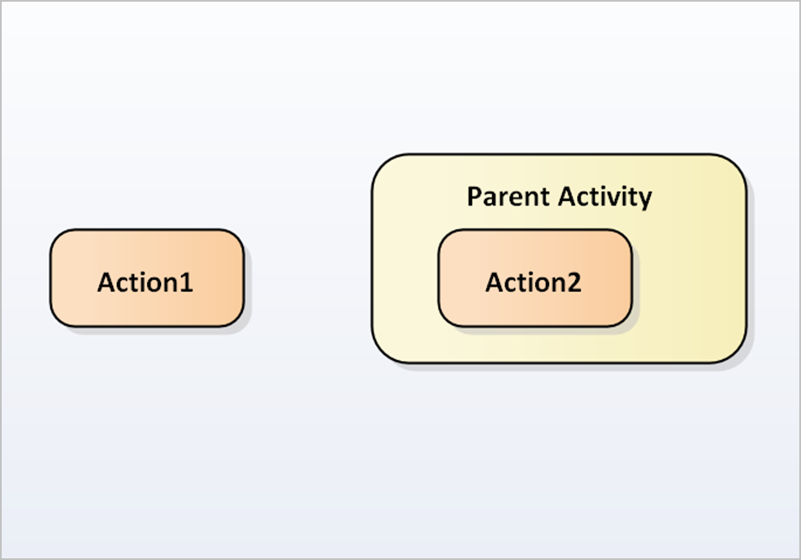
|
“An Action Element describes a basic process or transformation that occurs within a system, and is the basic functional unit
within an Activity Diagram.” |
Action elements are represented as round corner boxes with the name of the action showing inside.
Actions have no further decomposition in the activity containing them. The execution of a single action may trigger the
execution of other actions.
|
||||||||||||
|
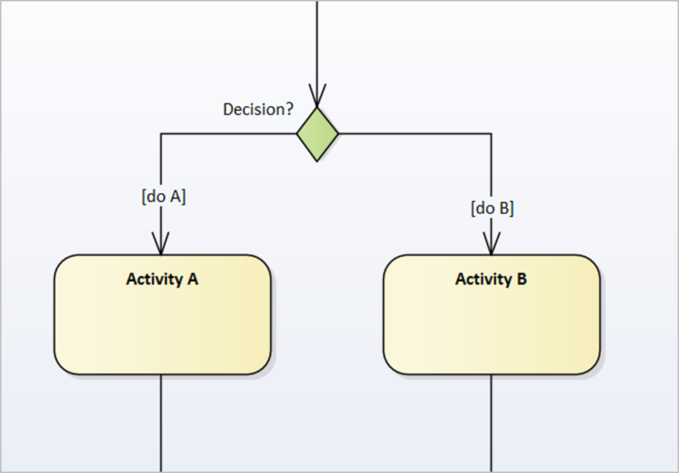
|
“Decision Elements represent the point where there is an option as to which outgoing Flow is to be taken.”
A single incoming Flow triggers the Decision. The Guard Condition must be satisfied for the flow to be actioned. The combination
of Guard Conditions from a single Decision Element should represent ALL possible conditions from the Decision.
|
The Decision Element is a diamond shape. It is labelled with the decision needed as a question or condition.
Guard Conditions are displayed on the outgoing Flows from a Decision Element. For example: [yes], [no] or another stated
condition — such as: [do a].
|
||||||||||||
|
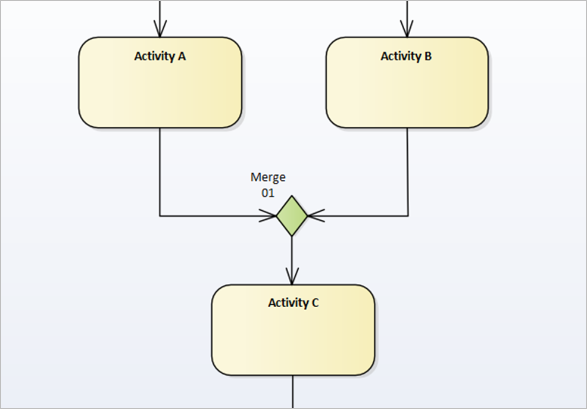
|
“Merge Elements (an Exclusive Or) enable Discontinuous Flows or inputs on an Activity Diagram to join back into a single Flow.” |
The Merge Element is a diamond shape with no Guard Conditions or decision text attached to it.
The Merge may have multiple Flows into it, but must only have one outgoing Flow.
To aid users it may have a label denoting it as a ‘Merge’, with a number to identify it.
|
||||||||||||
|
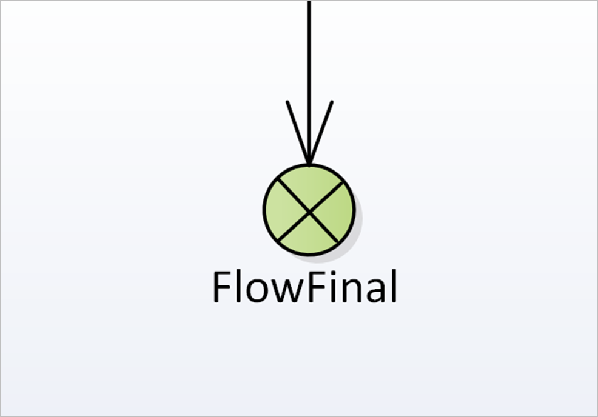
|
“The FlowFinal when ‘fired’ terminates only the flow leading to the flow final i.e. other flows continue to execute.” |
A FlowFinal is represented as small black circle outline with a diagonal cross within it. It has a single incoming flow. Label:
‘FlowFinal’ along with any other name for this element.
If the FlowFinal leads to another Activity Diagram then the name of the ‘referring onto’ diagram name may also be added
|
||||||||||||
|
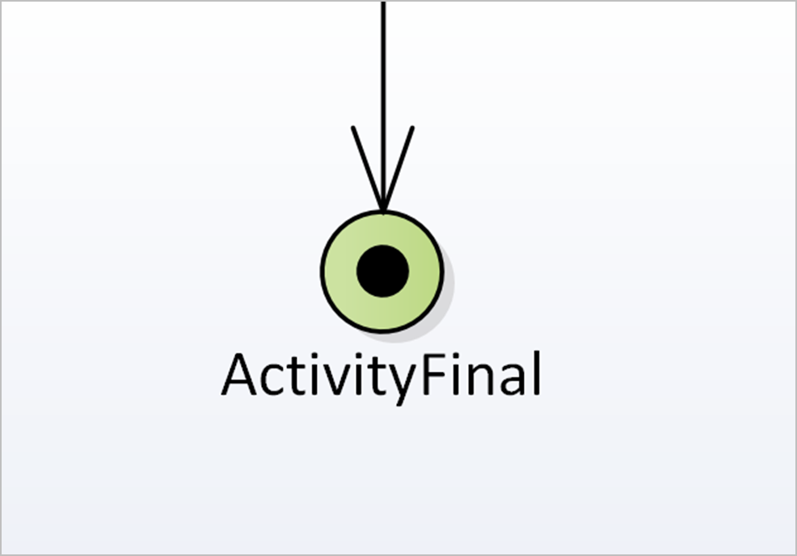
|
“An ActivityFinal when ‘fired’ terminates all processing on the diagram. Control is passed to the parent activity (or ends
the whole process if the diagram describes a self-contained process).” |
ActivityFinal elements are represented as a small solid black circle enclosed within a circle outline. It has a single incoming
flow. Labelled ‘ActivityFinal’ along with any other name for this element.
If the ActivityFinal leads to another Activity Diagram then the name of the ‘referring onto’ diagram name may also be added
|
||||||||||||
|
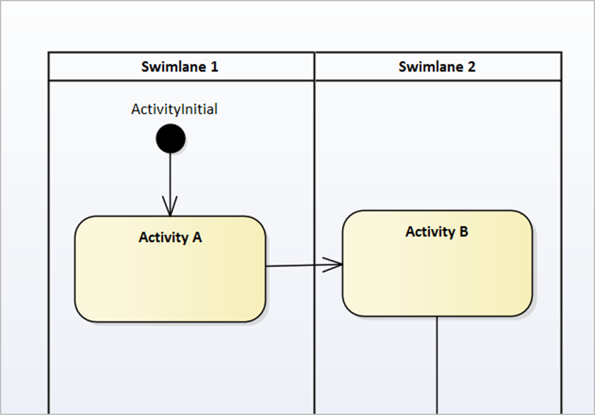
|
“Swimlanes are defined areas on the Diagram representing an Actor role. Swimlane Regions may represent either Human or System
roles. The role takes responsibility for the Elements represented within that swimlane.” |
Swimlane regions are annotated by vertical or horizontal divisions across the diagram. Each Swimlane should be labelled for
the role that it is representing.
Activities must be placed clearly within one of the Swimlanes identified for a Diagram (they may not sit over the division
between Swimlane regions). Flows are allowed to cross any divisions between Swimlane regions
|
||||||||||||
|
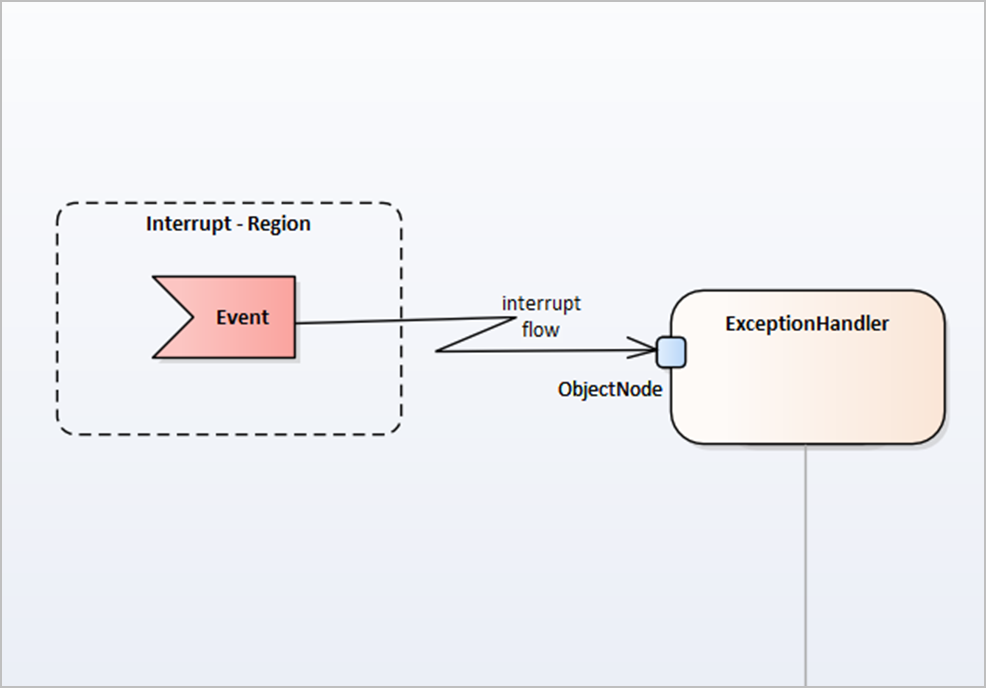
|
“Event Regions are defined areas on Activity Diagrams. The elements in the region may be affected by an ‘Interrupt Event’
that can impact the processing flow. ”
Any Activity outside of the Interrupt Region cannot be interrupted by the ‘event’. |
Event Regions are show as a labelled area bounded by a dotted line.
An ‘Interrupt Flow’ links the element denoting the ‘Interrupt Event’ with the first ‘Interruption Handler’ Activity.
Within the Event Region:
|
||||||||||||
|
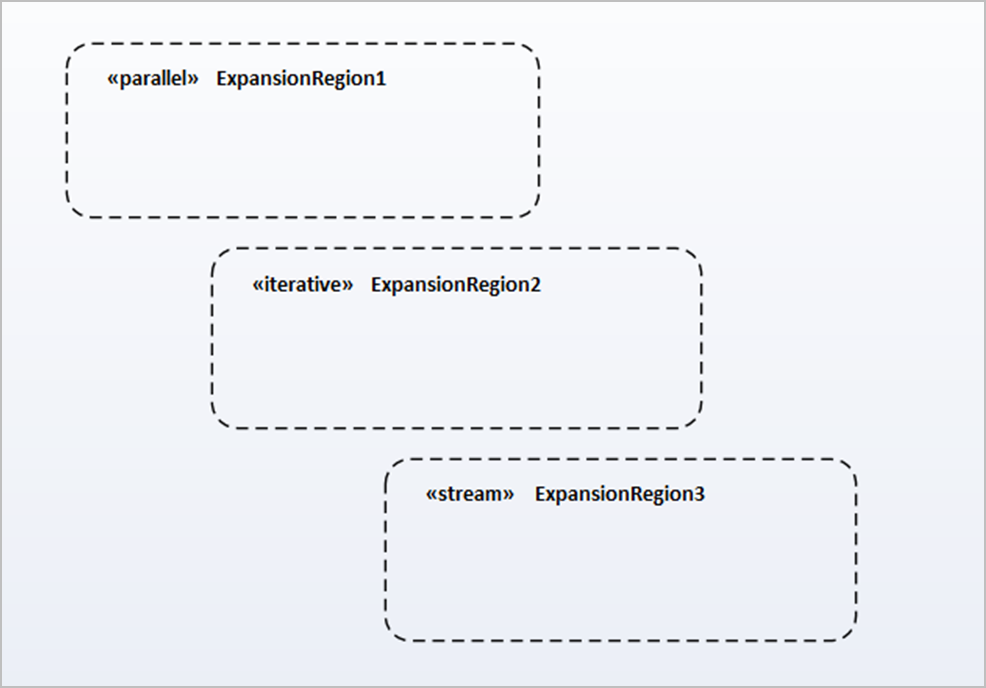
|
“Expansion regions are defined areas on Activity Diagrams. They enclose a group of ActivityNodes and ActivityEdges that are
to be executed several times on the incoming data - once for every element in the input collection.”
The concurrency of the Expansion Region's multiple executions can be specified by type as either ‘Parallel’, ‘Iterative’ or
‘Stream’.
|
They show as a labelled region with a dotted line stereotyped according to the type of expansion region.
|
||||||||||||
|
“‘Parallel’ Expansion Regions reflect that the elements in the incoming collections can be processed at the same time or overlapping.” |
||||||||||||||
|
“‘Iterative’ Expansive Region concurrency specifies that execution must occur sequentially.” |
||||||||||||||
|
“‘Stream’ Expansion Region indicates that the input and output come in and exit as streams. ”
The Expansion Region's process must have some method to support streams. |
||||||||||||||
|
“Flows on UML Activity Diagrams represent the relationships between activities; specifically their ordering, triggering as
well as any dependencies between Activities.”
The following define the main types of Flow available for Activity Diagrams: |
All flows are denoted by a directed line.
Flows should not cross if at all possible but if it is unavoidable all flows should cross at right angles.
Coupled Flows — where flows are chronologically associated between the same activities (for example a requesting flow and
its response flow) the earlier flow should be positioned above the later flow.
|
|||||||||||||
|
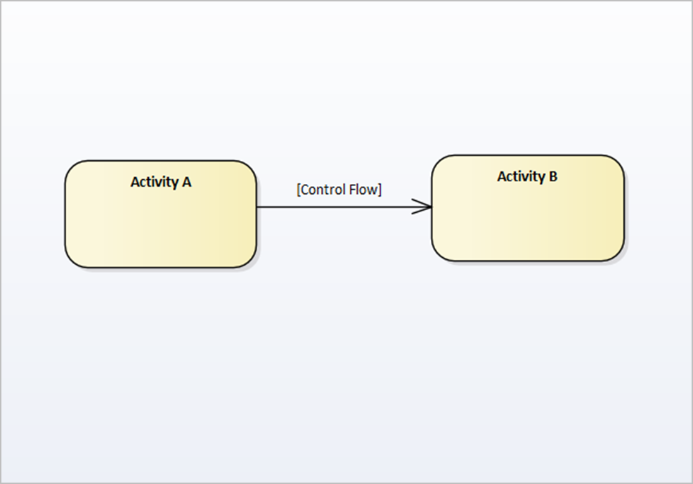
|
“Control Flows show the direction of the processing flow between Activities, as control moves from one Activity to another.” |
Redundant use of control flows is to be avoided.
|
||||||||||||
|
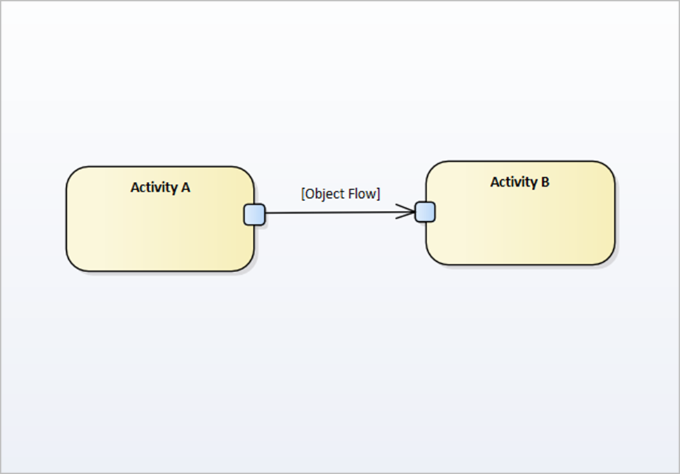
|
“Object Flows are used to denote the transmission / receipt of a message or document, handled within the process.” |
Object Flows are to be named to identify the object being transmitted.
The names of the transmit and receive objects should be hidden and the object name should be added as the Link Name
Where the object flow represents a communication it must be associated with ‘interrupt events’ that also cater for ‘duplication’
and ‘timeout’ events; and so must be encapsulated within an interruptible region.
The existence of an object flow implies control flow and does not require an additional control flow structure within the
diagram.
Where an object flow identifies the object name, the activity name should not refer to the full object name
|
||||||||||||
|
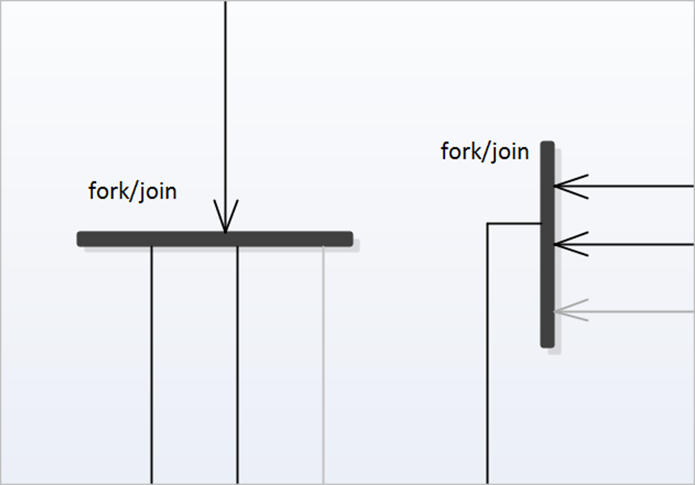
|
“Concurrent Flows - Divide a single incoming flow (using Forks and Joins) to trigger Flows and Activities that complete simultaneously.
Once all processing is complete they are synchronised and re-join the main processing Flow” |
Fork/Join elements are used to elaborate Concurrent Flows.
‘Forks’ have a single entry flow. ‘Joins’ have a single exit flow.
Outgoing flows from a forks and joins must have no triggers or guard conditions.
|
| Related content:“ Figure: activity diagram example”“ Activity Diagram Artefact”“ SBM (Product Description)” |